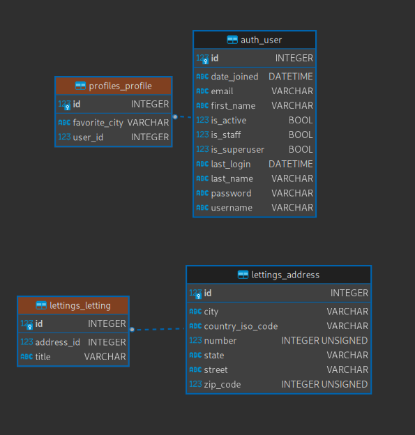

Schema de Base de données:
La base de données de l’application “oc_lettings_site” :
Le modèle “Profile” :
- Il représente un profil d’utilisateur :
user (utilisateur) : une relation OneToOneField avec le modèle User de Django pour représenter le profil utilisateur associé.
favorite_city (ville préférée) : une chaîne de caractères permettant de stocker la ville préférée de l’utilisateur. Ce champ peut être laissé vide (blank=True) si l’utilisateur n’a pas de ville préférée.
Le modèle “Letting”:
- Il représente une annonce de location:
title (titre) : une chaîne de caractères pour stocker le titre de l’annonce de location.
address (adresse) : une relation OneToOneField avec le modèle Address défini précédemment, pour représenter l’adresse de l’annonce de location.
Le modèle “Address” :
- Il représente une adresse et possède les attributs suivants :
number (numéro) : un entier positif pour stocker le numéro de rue de l’adresse, avec une limite de validation de 9999.
street (rue) : une chaîne de caractères de longueur maximale 64 pour stocker le nom de la rue.
city (ville) : une chaîne de caractères de longueur maximale 64 pour stocker le nom de la ville.
state (état) : une chaîne de caractères de longueur maximale 2 pour stocker l’abréviation à deux lettres de l’État.
zip_code (code postal) : un entier positif pour stocker le code postal de l’adresse, avec une limite de validation de 99999.
country_iso_code (code ISO du pays) : une chaîne de caractères de longueur maximale 3 pour stocker le code ISO à trois lettres du pays.
En résumé, la base de données d’oc_lettings_site comprend des modèles pour représenter des profils d’utilisateurs, des annonces de location et des adresses. Les profils d’utilisateurs sont associés à un utilisateur Django existant, et les annonces de location sont liées à une adresse spécifique à l’aide d’une relation OneToOneField.